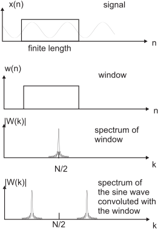

Next:
Problems with finite length
Up:
Sampled time and/or frequency
Previous:
Discrete Fourier Transform (DFT)
Contents
Properties of the DFT
Periodicity:
(
54
)
(
55
)
Symmetry: if
real:
 (
56
)
This is important when manipulating
by hand.
Time Reversal:
(
57
)
(
58
)
Circular
convolution:
(
59
)
with
(
60
)
More useful equations are at
Proakis and Manolakis (1996, pp.415)
.
Figure 9:
The effect of windowing on the DFT.
github / contact


 real:
real:

 (60)
(60)